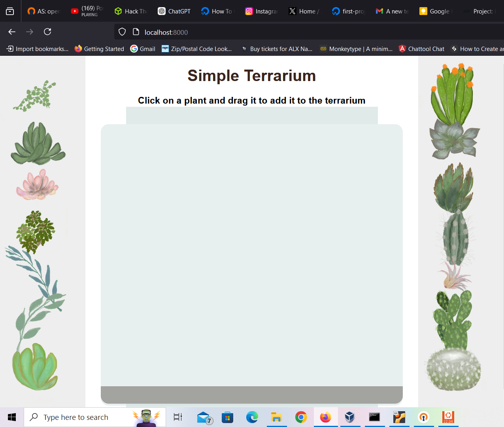

Simpe Terrarium
Intro section
This project is a simple terrarium built in HTML, CSS and JavaScript. involving DOM Manipulation, a key aspect in web development. The terrarium container is actually div elements I modeled into different shapes and styled them with different color shades to give it the container its final look. I created JavaScript function that makes the iamge elements dragable. The functionupdates the image postion as the mouse moves it around the screen, with the help of some basic JS event handlers.
